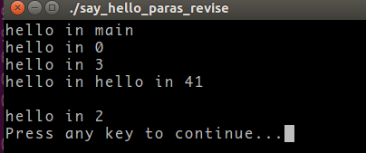

C/C++ Notes¶
GCC: gcc/g++¶
GCC 代表 GNU Compiler Collections, 主要用于编译 C/C++，但也支持其它语言，如 Fortran, Go.
- gcc/g++ 都可以编译任何
.c或者.cpp文件，但 gcc 将其看作分别 C, C++，而 g++ 将其都看成 C++ - 在 link 时，g++ 会自动连接 C++ 标准库，而 gcc 不会
see also:
一步到位的编译命令为
gcc test.c -o test
它可以拆解为以下若干步
# 预处理, -E 使得编译器在预处理后停止，并输出预处理结果
gcc -E test.c -o test.i
// gcc -E test.c
# 编译为汇编代码, -S 程序编译期间，生成汇编代码后，停止
gcc -S test.i -o test.s
# 汇编
gcc -c test.s -o test.o
# 连接
gcc test.o -o test
- 多个程序文件的编译
gcc test1.c test2.c -o test
- 检错
gcc -pedantic illcode.c -o illcode
gcc -Wall illcode.c -o illcode
gcc -Werror test.c -o test
- 编译成可执行文件
gcc -c -I /usr/dev/mysql/include test.c -o test.o
- 连接库文件
gcc -L /usr/dev/mysql/lib –lmysqlclient test.o -o test
- 强制连接时使用静态链接库: 优先使用动态链接库，只有当动态链接库不存在时才考虑使用静态链接库，
-static强制使用静态链接库
在 /usr/dev/mysql/lib 目录下有链接时所需要的库文件libmysqlclient.so和 libmysqlclient.a，为了让GCC在链接时只用到静态链接库，可以使用下面的命令
gcc -L /usr/dev/mysql/lib -static -lmysqlclient test.o -o test
-
静态库链接时搜索路径顺序:
- ld会去找GCC命令中的参数-L
- 再找gcc的环境变量 LIBRARY_PATH
- 再找内定目录 /lib /usr/lib /usr/local/lib 这是当初compile gcc时写在程序内的
-
动态链接时、执行时搜索路径顺序: see also
- 编译目标代码时指定的动态库搜索路径
- 环境变量 LD_LIBRARY_PATH 指定的动态库搜索路径
- 配置文件 /etc/ld.so.conf 中指定的动态库搜索路径
- 默认的动态库搜索路径 /lib
- 默认的动态库搜索路径 /usr/lib
Print Format¶

GSL¶
- My compiled
libandincludefor Windows and the detailed procedures: szcf-weiya/GSLwin
OpenMP¶
get its version¶
// https://stackoverflow.com/questions/1304363/how-to-check-the-version-of-openmp-on-linux
#include <unordered_map>
#include <iostream>
#include <omp.h>
using namespace std;
int main()
{
unordered_map<unsigned, string> map{{200505,"2.5"},{200805,"3.0"},{201107,"3.1"},{201307,"4.0"},{201511,"4.5"},{201811,"5.0"},{202011,"5.1"}};
cout << "We have OpenMP " << map.at(_OPENMP) << endl;
}
On T460P,
$ g++ version.cpp -fopenmp
$ ./a.out
We have OpenMP 4.5
data scope attribute clause¶

source: Shared and private variables in a parallel environment
#pragma omp critical¶
Info
A practical example: r.push_back(j);
指定某个区域的代码，每次只能同时被一个线程执行。
references¶
OpenMP topic: Loop parallelism
Pointer¶
- 空格不重要：
int* p,int * p,int *p,int*p，但是类型为int *或int*: refer to c++指针（一）——指针的定义以及写法–大风车-CSDN博客 and C++中引用，指针，指针的引用，指针的指针–luoshenFU的专栏-CSDN博客
reference vs pointer¶
1 2 3 4 5 6 7 8 9 10 11 12 13 14 | |
- 赋值时左右端类型需相同，与符号
*和&无关 b与array的地址相同
输出字符型指针地址值¶
C 语言中通过 printf 便可以很方便地输出字符串指针地址值，如
#include <stdio.h>
int main (){
const char *pstr = "hello world";
printf("字符串: %s\n", pstr);
printf("字符串起始地址值: %p\n", pstr);
return 0;
}
运行结果为，
$ gcc print_pointer_address.c
$ ./a.out
字符串: hello world
字符串起始地址值: 0x56499eb0e724
但在 Cpp 中没那么简单，主要原因是
C++标准库中I/O类对 << 操作符重载，因此在遇到字符型指针时会将其当作字符串名来处理，输出指针所指的字符串
类似 C 中强制类型转换，用 static_cast 将字符串指针转换成无类型指针。
#include <iostream>
using namespace std;
int main()
{
const char *pstr = "hello world";
cout << pstr << endl;
cout << static_cast<const void*>(pstr) << endl;
return 0;
}
运行结果为，
$ g++ print_pointer_address.cpp
$ ./a.out
hello world
0x556f1462fa65
指针初始化¶
double x;
double *p = &x;
DO NOT
double *p = 5;
BUT
double *p = "aaa";
double *p;
参数和返回值的三种传递方式¶
参考
值传递¶
改变 x 的值不会影响 n
void Func1(int x)
{
x = x + 10;
}
int n = 0;
Func1(n);
指针传递¶
void Func2(int *x)
{
(*x) = (*x) + 10;
}
int n = 0;
Func2(&n);
引用传递¶
x 和 n 是一个东西
void Func3(int &x)
{
x = x + 10;
}
int x = 0;
Func3(n);
引用传递的性质像指针传递，而书写方式像值传递。
int m;
int &n = m;
其中 n 是 m 的一个引用 (reference)，而 m 是被引用物 (referent).
引用的规则如下：
- 引用被创建时同时被初始化，而指针则可以在任何时候初始化；
- 不能有 NULL 引用，必须与合法的存储单元关联，而指针可以是 NULL;
- 一旦引用被初始化，就不能改变引用的关系，而指针则可以随时改变所指的对象。
多线程编程（未完）¶
say_hello¶
1 2 3 4 5 6 7 8 9 10 11 12 13 14 15 16 17 18 19 20 21 22 23 24 25 26 27 | |
两次运行的结果混乱，因为没有同步？


say_hello_paras¶
1 2 3 4 5 6 7 8 9 10 11 12 13 14 15 16 17 18 19 20 21 22 23 24 25 26 27 28 29 30 31 | |

结果混乱！！
可能原因：主进程还没开始对i赋值，线程已经开始跑了…?
say_hello_paras_revise¶
1 2 3 4 5 6 7 8 9 10 11 12 13 14 15 16 17 18 19 20 21 22 23 24 25 26 27 28 29 30 31 32 33 34 35 | |


Algorithms¶
const 总结¶
new¶
申请空间，并执行相应的构造函数
delete¶
执行析构函数，并释放空间
引用的本质是指针常量
const int m;
//int* p = &m;//wrong
const int* p = &m;
int *const pc = &m; //必须初始化，引用的本质
构造函数析构函数作用区间
A a;
A *ap;
if (...)
{
B b;
...// B析构
ap = new A;
}
......// A析构
delete ap;
先执行基类构造函数，再派生类构造函数； 先执行派生类析构函数，再派生基类析构函数。
函数模板和模板函数¶
C++中，函数模板与同名的非模板函数重载时，应遵循下列调用原则： 1. 寻找一个参数完全匹配的函数，若找到就调用它。若参数完全匹配的函数多于一个，则这个调用是一个错误的调用。 2. 寻找一个函数模板，若找到就将其实例化生成一个匹配的模板函数并调用它。 3. 若上面两条都失败，则使用函数重载的方法，通过类型转换产生参数匹配，若找到就调用它。 4. 若上面三条都失败，还没有找都匹配的函数，则这个调用是一个错误的调用。
初始化列表¶
extern¶
在Rcpp中，extern “C” 告诉编译器，保持其名称，不要生成用于链接的中间函数名。
“symbol lookup error”¶
./test: symbol lookup error: ./test: undefined symbol:
动态链接库的原因，因为更新完gsl之后，原先的动态链接库不管用了，可以用下面的命令追踪动态链接库
ldd test
ldd -d -r test
参考c++ runtime “symbol lookup error”
字符数组与数字互换¶
http://blog.csdn.net/sunquana/article/details/14645079
字符数字转数字¶
- atoi
- atof
- atol
- strtod
- strtol
数字转字符¶
sprintf
C: Correctly freeing memory of a multi-dimensional array¶
https://stackoverflow.com/questions/1733881/c-correctly-freeing-memory-of-a-multi-dimensional-array
#pragma unroll的用法¶
http://blog.csdn.net/fengzizhuang/article/details/9300431
Getting std :: ifstream to handle LF, CR, and CRLF?¶
-
https://stackoverflow.com/questions/6089231/getting-std-ifstream-to-handle-lf-cr-and-crlf
-
https://stackoverflow.com/questions/9188126/c-strange-behavior-with-stdistream-or-sentry-wrap-around/9189541#9189541
std::istream& safeGetline(std::istream& is, std::string& t)
{
t.clear();
// The characters in the stream are read one-by-one using a std::streambuf.
// That is faster than reading them one-by-one using the std::istream.
// Code that uses streambuf this way must be guarded by a sentry object.
// The sentry object performs various tasks,
// such as thread synchronization and updating the stream state.
std::istream::sentry se(is, true);
std::streambuf* sb = is.rdbuf();
for(;;) {
int c = sb->sbumpc();
switch (c) {
case '\n':
return is;
case '\r':
if(sb->sgetc() == '\n')
sb->sbumpc();
return is;
case EOF:
// Also handle the case when the last line has no line ending
if(t.empty())
is.setstate(std::ios::eofbit);
return is;
default:
t += (char)c;
}
}
}
使用这个代码注意一个问题 应该使用
while(!safeGetline(input, line).eof)
不能用
while(safeGetline(input, line))
fPIC¶
参考http://blog.sina.com.cn/s/blog_54f82cc201011op1.html
C++ public/protected/private¶
深入理解C++中public、protected及private用法
C++按行读取文本文件¶
struct–构造函数对结构体初始化的影响¶
¶
C++11 std::chrono库详解¶
vector::erase()方法的详细介绍及问题解答¶
adapted from vector::erase()方法的详细介绍及问题解答
当调用erase()后Iter迭代器就失效了，变成了一野指针。… 要解决调用erase()方法后，Iter迭代器变成野指针的问题，这个时候呢给他赋一个新的迭代器给他。
// ref: http://blog.sina.com.cn/s/blog_6377b8e60100ino6.html
#include <vector>
#include <iostream>
using namespace std;
int main()
{
vector <int> v1;
vector <int>::iterator Iter;
v1.push_back( 10 );
v1.push_back( 20 );
v1.push_back( 30 );
v1.push_back( 40 );
v1.push_back( 50 );
cout << "v1 =" ;
for ( Iter = v1.begin( ) ; Iter != v1.end( ) ; Iter++ )
cout << " " << *Iter;
cout << endl;
v1.erase( v1.begin( ) );
cout << "v1 =";
for ( Iter = v1.begin( ) ; Iter != v1.end( ) ; Iter++ )
cout << " " << *Iter;
cout << endl;
v1.erase( v1.begin( ) + 1, v1.begin( ) + 3 );
cout << "v1 =";
for ( Iter = v1.begin( ) ; Iter != v1.end( ) ; Iter++ )
cout << " " << *Iter;
cout << endl;
//当调用erase()后Iter迭代器就失效了，变成了一野指针。
//所以要处理这种问题，关键是要解决调用erase()方法后，Iter迭代器变成野指针的问题，
//这个时候呢给他赋一个新的迭代器给他。
v1.push_back( 10 );
v1.push_back( 30 );
v1.push_back( 10 );
cout << "v1 =";
for ( Iter = v1.begin( ) ; Iter != v1.end( ) ; Iter++ )
cout << " " << *Iter;
cout << endl;
for(Iter = v1.begin(); Iter != v1.end(); Iter++)
{
if(*Iter == 10)
{
v1.erase(Iter);
Iter = v1.begin(); //当erase后，旧的容器会被重新整理成一个新的容器
// or
// Iter = v1.erase(Iter);
}
if (Iter == v1.end())
break;
}
cout << "v1 =";
for ( Iter = v1.begin( ) ; Iter != v1.end( ) ; Iter++ )
cout << " " << *Iter;
cout << endl;
// another one
v1.erase(v1.begin()+1);
cout << "v1 =";
for ( Iter = v1.begin( ) ; Iter != v1.end( ) ; Iter++ )
cout << " " << *Iter;
cout << endl;
return 0;
}
最长递增子序列 O(NlogN)算法¶
c语言中realloc()函数解析¶
C语言结构体里的成员数组和指针(关于零数组)¶
C语言：数组和指针的区别¶
1017. The Best Peak Shape (35)¶
1017. The Best Peak Shape (35)
error: ‘stod’ was not declared in this scope¶
error: ‘stod’ was not declared in this scope
分词¶
参考The Porter Stemming Algorithm
C++中String类的字符串分割实现¶
typeinfo.h¶
exit(0), exit(1)和return的区别¶
参考exit（0）与exit（1）、return区别 - ITtecman - 博客园
- exit(0): 正常运行程序并退出程序
- exit(1): 非正常运行导致退出程序
- return: 返回函数
命令行参数的传入¶
申明 main 函数如下
int main( int argc, char *argv[] );
int main( int argc, char **argv );
其中 argc 参数包含参数的计数值，而 argv 包含指向这些参数的指针数组，且第一个参数为程序名。比如这里，
size_t order = atoi(argv[1]);
对于命令行的处理，可以采用 getopt() 或者 getopt_long().
variably modeified type in C language¶
参考Variably modified type in C language - Stack Overflow
write into file immediately¶
fprintf(fileptr, "writing to file\n");
fflush(fileptr);
How to make fprintf() writes immediately
or refer to
Map¶
findreturns an iterator, so if the key does not exist it returns an end iterator.
std::map<int, int> some_map;
if (some_map.find(10) != some_map.end())
{
// key exists
}
else
{
// key does not exist
}
Created: June 5, 2017